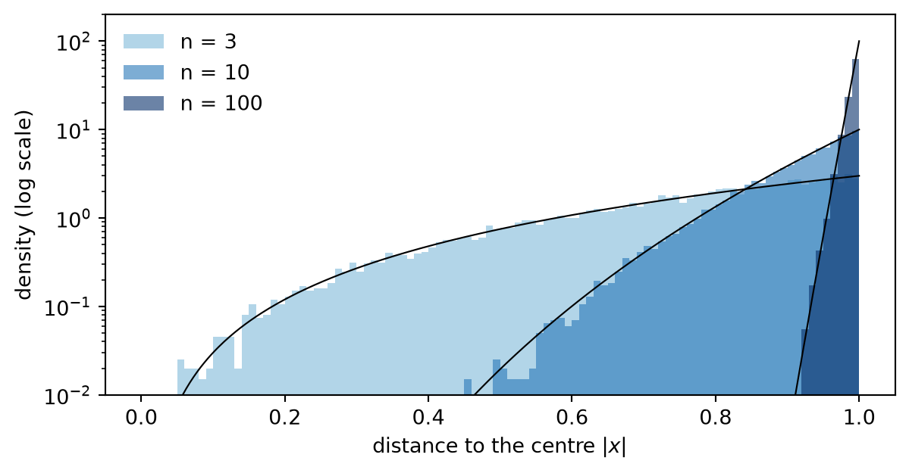
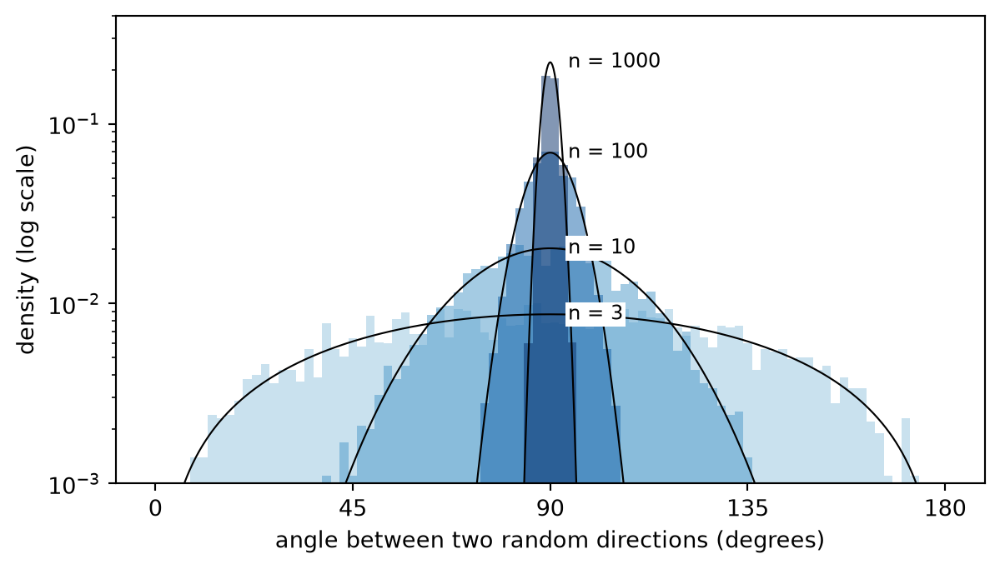

Setup: sampling uniform points in the ball (explained in route 2)
import numpy as npimport matplotlib.pyplot as pltfrom scipy.special import gammalnfrom scipy.stats import normrng = np.random.default_rng(0)def uniform_ball(n, N):# direction: normalised Gaussian# radius: the max of n dice, since P(max <= t) = t^n is exactly the radius law g = rng.standard_normal((N, n)) theta = g / np.linalg.norm(g, axis=1, keepdims=True) R = np.abs(rng.uniform(-1, 1, (N, n))).max(axis=1)return R[:, None] * theta
Pick a point uniformly at random in the unit ball of \(\mathbb R^n\). For high enough \(n\) this point will practically always fall along the surface, i.e. high dimensional watermelons have no red part. But not only that, this is also true for the equators of high dimensional spheres. Let’s see why.
Warm-up: the surface
First, the claim from the introduction: a random point in the unit ball is practically always near its surface. Since we choose the point uniformly at random, the chance of being near the surface is the same as the volume of a thin shell of width \(\varepsilon\) near the surface. Like an onion.
Shrinking the unit ball by a factor \(1-\varepsilon\) gives exactly \(\{|x| \le 1-\varepsilon\}\), and shrinking multiplies volumes by \(1-\varepsilon\) once per coordinate, so
For \(\varepsilon = 0.01\) the inner part holds \(97\%\) of the volume for \(n=3\), \(37\%\) for \(n=100\) and \(0.004\%\) for \(n=1000\). The rest lies in the thin shell \(1-\varepsilon < |x| \le 1\) near the surface.
Sampling random points shows it directly. Their distance to the centre has density \(n r^{n-1}\) (the derivative of \(r^n\)), and as \(n\) grows it piles up against \(r = 1\).
Code
r = np.linspace(0, 1, 400)dims = [3, 10, 100]colours = plt.cm.Blues(np.linspace(0.45, 1.0, len(dims)))fig, ax = plt.subplots(figsize=(7, 3.4))for n, col inzip(dims, colours): R = np.linalg.norm(uniform_ball(n, 20_000), axis=1) ax.hist(R, bins=100, range=(0, 1), density=True, color=col, histtype="stepfilled", alpha=0.6, label=f"n = {n}") ax.plot(r, n * r**(n -1), color="k", lw=0.8)ax.set_xlabel("distance to the centre $|x|$")ax.set_ylabel("density (log scale)")ax.set_yscale("log"); ax.set_ylim(1e-2, 200)ax.legend(frameon=False, loc="upper left")plt.show()

Figure 1: Distance to the centre of uniform points in the ball. Black curves are the exact density n r^(n-1). Log vertical axis.
Setup for the equator
Now let’s define what equator means. For a given unit vector \(e_1\), the equator is the hyperplane \(\{x_1 = 0\}\), and the latitude of a point is its coordinate \(x_1\). Being close to the equator means having \(|x_1| < \delta\) for some \(\delta > 0\).
In \(\mathbb R^3\) the equator of \(S^2\) is a circle \(S^1\), which feels like a very small part. But in \(\mathbb R^n\) the equator of \(S^{n-1}\) is an \(S^{n-2}\). It only loses one dimension out of \(n\), and in \(\mathbb R^{100000000}\) losing one dimension out of a hundred million may not matter as much.
Route 1: slicing
Where does the random point’s latitude \(x_1\) tend to land? It falls between \(x\) and \(x+dx\) with probability proportional to the volume of that thin slab. The slab is approximately an \((n-1)\)-dimensional ball of radius \(\sqrt{1-x^2}\) with thickness \(dx\), so its volume is proportional to \(\big(\sqrt{1-x^2}\big)^{n-1}dx =
(1-x^2)^{\frac{n-1}{2}}\,dx\). Hence the latitude has density
\[
f_n(x) = c_n\,(1-x^2)^{\frac{n-1}{2}},
\]
where \(c_n\) is some function of \(n\) (we don’t care). Now let’s find the variance of the latitude \(x_1\). Since \(\mathbb E[x_1]^2=0\) is clearly zero, the variance is \(\mathbb E[x_1^2]\). We also have that \(n\mathbb E[x^2_1]=\mathbb E[\sum^n_i x_i^2] = \int_0^1 r^2\, n r^{n-1}\,dr = n \int^0_1 r^{n+1}\,dr = \frac{n}{n+2}\) so Var\((x_1) = \frac{1}{n+2}\).
For large \(n\) we then have \(x_1 \sim \frac{1}{\sqrt n}\), so \(x^2\) is small and \((1-x^2)^{\frac{n-1}{2}}=\exp\!\big(\tfrac{n-1}{2}\ln(1-x^2)\big)\approx e^{-(n-1)x^2/2}\), which is a Gaussian. Hence
Figure 2 shows the latitude of sampled points: for \(n=3\) it follows \(f_n\) but is far from Gaussian, while for \(n=20\) and \(n=200\) it is indistinguishable from \(\mathcal N(0,1/(n+2))\) and visibly narrower each time.
Figure 2: Latitude of uniform points in the ball, against the exact density f_n and the normal approximation.
To see what this means, take the slab \(|x_1| < 0.01\), just 1% of the diameter. Let’s see what percentage of the volume sits inside this slab for different dimensions \(n\):
\(n\)
volume inside \(\lvert x_1\rvert<0.01\)
1
1%
3
1.5%
100
8%
1000
25%
10 000
68%
100 000
99.8%
1 000 000
\(1 - 10^{-23}\)
So as \(n\) grows, a thin slab around the equator holds almost all of the volume, and by symmetry this does not depend on which equator we chose.
Close to every equator at once?
But now we run into an issue: if most of the mass sits in the slab around one equator, how can it also sit in the slab around a different one? In reality it isn’t a problem, because the slabs overlap.
Take two different equators and the slabs around them. They both miss the same fraction of the total volume of the ball, let’s call it \(p\). The probability of being in both slabs is at least \(1-2p\), which is still very close to 1 because we already know \(p\) is very small.
This is just the union bound: a point outside the intersection of the slabs \(S_1, \dots, S_k\) must be outside at least one of them, so
Since \(p\) shrinks exponentially as \(n\) grows, for large enough \(n\) the bound \(1-kp\) stays close to 1 even for many equators: a random point is near all of them at once.
For instance, in \(n = 10\,000\), what fraction of sampled points lies within \(0.05\) of all ten thousand coordinate equators at once, i.e. has no coordinate larger than \(0.05\)?
Code
n =10_000x = uniform_ball(n, 1_000)print(f"no coordinate above 0.05: {np.mean(np.abs(x).max(axis=1) <0.05):.3f}")print(f"mean distance to the centre: {np.linalg.norm(x, axis=1).mean():.4f}")
no coordinate above 0.05: 0.995
mean distance to the centre: 0.9999
Almost all of them, while their mean distance to the centre is \(n/(n+1) \approx 0.9999\).
Of course we still need a finite number of equators and a high enough dimension \(n\). But the point is that the equator slabs are far from disjoint. In 3D two equators of the sphere only meet only at two antipodal points, but in \(n\) dimensions the intersection of \(k\) equators is a whole sphere \(S^{n-1-k}\), still huge when \(k \ll n\).
Route 2: building the point
Now forget the slicing. Let’s reach the same conclusion by building the random point directly, from two independent pieces: a direction and a radius.
The direction. Take \(g = (g_1,\dots,g_n)\) with independent standard normal entries. Its density \(\prod_i e^{-g_i^2/2} = e^{-|g|^2/2}\) only depends on \(|g|\), so \(g\) has no preferred direction and \(g/|g|\) is uniform on the sphere.
The radius. Roll \(n\) independent uniform numbers \(u_i\) in \([-1,1]\). The probability that none of them exceeds \(t\) is the intersection of \(n\) independent events, so
This is exactly the law of the radius from the warm-up, \(\mathbb P(|x| \le t) = t^n\). So the radius of a uniform point can be sampled as the largest of \(n\) dice, \(R = \max_i |u_i|\).
Putting both together gives \(x = R\, g/|g|\), with \(R\) and \(g\) independent. This point is uniform in the ball: in polar coordinates the volume element is \(dx = r^{n-1}\,dr\,d\sigma\), so a uniform point is exactly a uniform direction times an independent radius with \(\mathbb P(R \le t) = t^n\), which is what we built. (Note that the radius is not uniform on \([0,1]\): the outer shells have more room.) Its latitude is
\(R \to 1\), because \(\mathbb P(R \le 1-\varepsilon) = (1-\varepsilon)^n \le e^{-n\varepsilon}\): with many dice, some die almost surely lands near \(\pm 1\).
\(|g|^2/n = \frac1n\sum_i g_i^2 \to 1\) by the law of large numbers, since \(\mathbb E[g_i^2] = 1\).
\(g_1\) is a standard normal, exactly, for every \(n\).
Here are the first two factors, sampled for growing \(n\):
the same result as route 1, without slicing anything. Here the Gaussian is not an approximation of some density: it is the \(g_1\) we used to pick the direction, shrunk by \(\sqrt n\) because the direction is shared among \(n\) coordinates. The same construction also explains the surface: the point is near the surface because \(R \to 1\), and near every equator because every coordinate is \(g_i/\sqrt n\).
The shadow
Keep only the first two coordinates \((x_1, x_2)\) of each point, i.e. project the ball onto a plane, like a shadow on the floor, and colour each point by its true distance to the centre, \(|x|\), computed with all \(n\) coordinates.
In 3D this is the familiar shadow of a ball: a full disk, a bit darker in the middle because the ball is thickest there. The shadow loses the height, so a point whose shadow lands in the centre of the disk could be at the centre of the ball, or at its north or south pole. In high dimension the shadow loses \(n-2\) coordinates instead of one, and that changes everything.
Figure 4: Shadow of uniform points of the ball on the (x1, x2) plane. Colour is the true distance to the centre.
For \(n=3\) the colours are mixed, as expected. At \(n=300\) every point is yellow: they all sit on the surface. And yet their shadows form a tiny cloud in the centre. The distance to the centre comes from the other \(298\) coordinates, which the shadow cannot see. Since \(x_1\) and \(x_2\) are both small, every point is close to the equators \(\{x_1=0\}\) and \(\{x_2=0\}\) at once.
Everyone is on everyone’s equator
Every point has its own pole, the direction \(x/|x|\). So we can use one random direction \(\theta\) as the pole and ask at what latitude another independent random direction \(\theta'\) sits. Rotating \(\theta\) to \(e_1\), \(\langle\theta, \theta'\rangle\) has the same law as \(\theta'_1 = g_1/|g|\), which by route 2 is approximately \(\mathcal N(0, 1/n)\). Exactly, the angle \(\varphi\) between the two has density
For \(n=3\) this is \(\sin\varphi\), fairly spread out. For large \(n\) it becomes a peak at \(90°\) of width \(\sim 1/\sqrt n\) radians: two random directions in \(\mathbb R^{1000}\) are within \(90° \pm 5.4°\) of each other with probability about \(99.7\%\).
Code
def uniform_direction(n, N): g = rng.standard_normal((N, n))return g / np.linalg.norm(g, axis=1, keepdims=True)phi = np.linspace(0, 180, 721)dims = [3, 10, 100, 1000]colours = plt.cm.Blues(np.linspace(0.4, 1.0, len(dims)))fig, ax = plt.subplots(figsize=(7, 3.8))for n, col inzip(dims, colours): a, b = uniform_direction(n, 5_000), uniform_direction(n, 5_000) ang = np.degrees(np.arccos(np.clip(np.sum(a * b, axis=1), -1, 1))) ax.hist(ang, bins=90, range=(0, 180), density=True, color=col, histtype="stepfilled", alpha=0.5)# sin^(n-2) in logs, normalised numerically logp = (n -2) * np.log(np.sin(np.radians(phi)) +1e-300) p = np.exp(logp - logp.max()) p /= np.trapezoid(p, phi) ax.plot(phi, p, color="k", lw=0.8) ax.annotate(f"n = {n}", (90, p.max()), xytext=(8, 0), textcoords="offset points", va="center", fontsize=9, bbox=dict(fc="white", ec="none", pad=1))ax.set_xlabel("angle between two random directions (degrees)")ax.set_ylabel("density (log scale)")ax.set_yscale("log"); ax.set_ylim(1e-3, 0.4)ax.set_xticks([0, 45, 90, 135, 180])plt.show()

Figure 5: Angle between two random directions. Black curves are the exact density, proportional to sin^(n-2). Log vertical axis.
A shared budget
In reality this is all not that counterintuitive. The radius constraint \(x_1^2+\dots+x_n^2 \le 1\) is a budget shared by \(n\) coordinates. As we saw in the warm-up, almost all of the volume sits near the surface, so the budget is almost fully spent. A point could spend it all on one coordinate, but almost all of the volume comes from points that spread it evenly, giving each coordinate about \(1/n\). So every coordinate is of order \(1/\sqrt n\): the point is near every equator, while the total still adds up to a radius close to 1. Even a point that spends it all on one coordinate is only special in our choice of axes: after a rotation, \((1,0,\dots,0)\) becomes a point whose budget is spread evenly like any other.